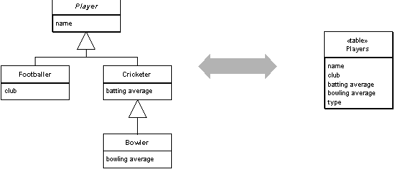

Single Table Inheritance (Наследование с единой таблицей)

Паттерн проектирования Single Table Inheritance
Описание Single Table Inheritance
Представление всех классов из иерархии наследования в виде одной таблицы в БД, содержащей столбцы для всех полей различных классов.
Реляционные БД не поддерживают наследование, по этому, записывая данные об объектах в БД, мы вынуждены придумывать, как отобразить наследование в таблицах. Конечно, мы стараемся минимизировать JOIN'ы, которые мгновенно появятся, если наследование реализовывать несколькими таблицами в БД. Паттерн Single Table Inheritance (наследование с единой таблицей) записывает все поля всех классов иерархии в одну таблицу.
Примеры реализации
SQL Схема
-- Создание единой таблицы для всех типов пользователей
CREATE TABLE users (
id INT PRIMARY KEY AUTO_INCREMENT,
type VARCHAR(50) NOT NULL, -- Тип пользователя (discriminator)
name VARCHAR(100) NOT NULL,
email VARCHAR(100) NOT NULL,
created_at TIMESTAMP DEFAULT CURRENT_TIMESTAMP,
-- Поля для Customer
phone VARCHAR(20),
address TEXT,
-- Поля для Employee
employee_id VARCHAR(20),
department VARCHAR(50),
salary DECIMAL(10,2),
-- Поля для Manager
team_size INT,
budget DECIMAL(12,2),
-- Поля для Admin
admin_level INT,
permissions TEXT
);
-- Индексы для оптимизации
CREATE INDEX idx_users_type ON users(type);
CREATE INDEX idx_users_email ON users(email);
CREATE INDEX idx_users_employee_id ON users(employee_id);
-- Вставка данных разных типов
INSERT INTO users (type, name, email, phone, address) VALUES
('Customer', 'John Doe', 'john@example.com', '+1234567890', '123 Main St');
INSERT INTO users (type, name, email, employee_id, department, salary) VALUES
('Employee', 'Jane Smith', 'jane@company.com', 'EMP001', 'IT', 75000.00);
INSERT INTO users (type, name, email, employee_id, department, salary, team_size, budget) VALUES
('Manager', 'Bob Johnson', 'bob@company.com', 'MGR001', 'IT', 95000.00, 5, 500000.00);
INSERT INTO users (type, name, email, admin_level, permissions) VALUES
('Admin', 'Alice Wilson', 'alice@company.com', 3, 'user_management,system_config');
-- Запросы для разных типов
-- Получить всех клиентов
SELECT * FROM users WHERE type = 'Customer';
-- Получить всех сотрудников
SELECT * FROM users WHERE type IN ('Employee', 'Manager');
-- Получить менеджеров с командой
SELECT * FROM users WHERE type = 'Manager' AND team_size > 0;PHP Реализация
id = $id;
$this->name = $name;
$this->email = $email;
$this->createdAt = new DateTime();
}
// Геттеры и сеттеры
public function getId() { return $this->id; }
public function getName() { return $this->name; }
public function getEmail() { return $this->email; }
public function getCreatedAt() { return $this->createdAt; }
public function setName($name) { $this->name = $name; }
public function setEmail($email) { $this->email = $email; }
// Абстрактный метод для получения типа
abstract public function getType();
// Метод для сохранения в БД
public function save(PDO $pdo) {
$sql = "INSERT INTO users (type, name, email, created_at";
$values = "VALUES (?, ?, ?, ?";
$params = [$this->getType(), $this->name, $this->email, $this->createdAt->format('Y-m-d H:i:s')];
// Добавляем специфичные поля для каждого типа
$this->addSpecificFields($sql, $values, $params);
$sql .= ") " . $values . ")";
$stmt = $pdo->prepare($sql);
return $stmt->execute($params);
}
// Абстрактный метод для добавления специфичных полей
abstract protected function addSpecificFields(&$sql, &$values, &$params);
}
// Класс клиента
class Customer extends User {
private $phone;
private $address;
public function __construct($id = null, $name = '', $email = '', $phone = '', $address = '') {
parent::__construct($id, $name, $email);
$this->phone = $phone;
$this->address = $address;
}
public function getType() { return 'Customer'; }
public function getPhone() { return $this->phone; }
public function getAddress() { return $this->address; }
public function setPhone($phone) { $this->phone = $phone; }
public function setAddress($address) { $this->address = $address; }
protected function addSpecificFields(&$sql, &$values, &$params) {
$sql .= ", phone, address";
$values .= ", ?, ?";
$params[] = $this->phone;
$params[] = $this->address;
}
}
// Класс сотрудника
class Employee extends User {
private $employeeId;
private $department;
private $salary;
public function __construct($id = null, $name = '', $email = '', $employeeId = '', $department = '', $salary = 0) {
parent::__construct($id, $name, $email);
$this->employeeId = $employeeId;
$this->department = $department;
$this->salary = $salary;
}
public function getType() { return 'Employee'; }
public function getEmployeeId() { return $this->employeeId; }
public function getDepartment() { return $this->department; }
public function getSalary() { return $this->salary; }
public function setEmployeeId($employeeId) { $this->employeeId = $employeeId; }
public function setDepartment($department) { $this->department = $department; }
public function setSalary($salary) { $this->salary = $salary; }
protected function addSpecificFields(&$sql, &$values, &$params) {
$sql .= ", employee_id, department, salary";
$values .= ", ?, ?, ?";
$params[] = $this->employeeId;
$params[] = $this->department;
$params[] = $this->salary;
}
}
// Класс менеджера
class Manager extends Employee {
private $teamSize;
private $budget;
public function __construct($id = null, $name = '', $email = '', $employeeId = '', $department = '', $salary = 0, $teamSize = 0, $budget = 0) {
parent::__construct($id, $name, $email, $employeeId, $department, $salary);
$this->teamSize = $teamSize;
$this->budget = $budget;
}
public function getType() { return 'Manager'; }
public function getTeamSize() { return $this->teamSize; }
public function getBudget() { return $this->budget; }
public function setTeamSize($teamSize) { $this->teamSize = $teamSize; }
public function setBudget($budget) { $this->budget = $budget; }
protected function addSpecificFields(&$sql, &$values, &$params) {
parent::addSpecificFields($sql, $values, $params);
$sql .= ", team_size, budget";
$values .= ", ?, ?";
$params[] = $this->teamSize;
$params[] = $this->budget;
}
}
// Фабрика для создания объектов из БД
class UserFactory {
public static function createFromArray($data) {
$type = $data['type'];
switch ($type) {
case 'Customer':
return new Customer(
$data['id'],
$data['name'],
$data['email'],
$data['phone'] ?? '',
$data['address'] ?? ''
);
case 'Employee':
return new Employee(
$data['id'],
$data['name'],
$data['email'],
$data['employee_id'] ?? '',
$data['department'] ?? '',
$data['salary'] ?? 0
);
case 'Manager':
return new Manager(
$data['id'],
$data['name'],
$data['email'],
$data['employee_id'] ?? '',
$data['department'] ?? '',
$data['salary'] ?? 0,
$data['team_size'] ?? 0,
$data['budget'] ?? 0
);
default:
throw new Exception("Unknown user type: $type");
}
}
}
// Использование
try {
$pdo = new PDO('mysql:host=localhost;dbname=test', 'username', 'password');
// Создание и сохранение клиента
$customer = new Customer(null, 'John Doe', 'john@example.com', '+1234567890', '123 Main St');
$customer->save($pdo);
// Создание и сохранение менеджера
$manager = new Manager(null, 'Jane Smith', 'jane@company.com', 'MGR001', 'IT', 95000, 5, 500000);
$manager->save($pdo);
} catch (Exception $e) {
echo "Error: " . $e->getMessage();
}
?>Использована иллюстрация с сайта Мартина Фаулера.